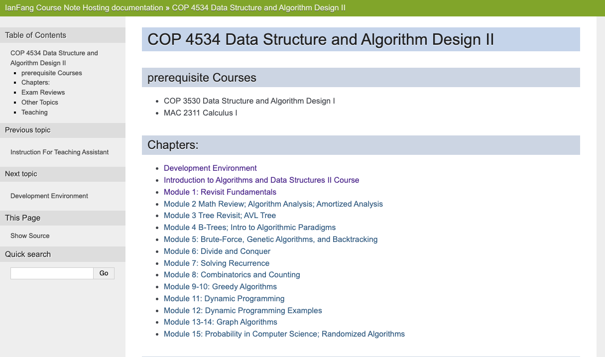

Data Structure and Algorithm Design II
Module 1
Xingang (Ian) Fang
Sections
Introduction to HTML Slides
Introduction to the DSA 2 course
Development Environment For C++
General Programming Concepts
C++ Language Review
Introduction to HTML Slides

Introduction to the COP4534 course
Course Description
Instructor Info
Course contents
Communication
Course Description
Description:
A second course in Data Structures and Algorithms covers topics including the mathematical properties of algorithms (complexity, correctness), trees and graphs, hashing, relational (database) structures, Dynamic Programming, and numerical programming. The emphasis is on issues of correctness and efficiency. Students entering this course are expected to have a solid knowledge of programming.
Keywords:
Abstract Data Type (ADT); Data Structure; Algorithm; Algorithm Analysis; Recursion; Self-balancing trees; Master Theorem; Graph; Counting; Greedy algorithms; Genetic algorithms; Dynamic programming;
Course Objective
Develop solutions to problems by applying algorithms discussed in class.
Develop solutions that emphasize mathematical and scientific problems.
Write algorithms for solving problems prior to coding.
Analyze solutions in terms of time complexity.
Solve probability problems and counting problems with permutations and combinations.
Utilize greedy algorithms when applicable.
Construct graphs and implement representative algorithms.
Analyze and contrast graph based solutions.
Construct solutions that make use of Dynamic Programming techniques.
Instructor Info
Xingang Fang
Lecturer, CS department, UWF
email: xfang@uwf.edu
Zoom link: https://uwf.zoom.us/my/xfang

Textbook Info
Required textbook in this course
Data Structures and Algorithm Analysis in C++, 4th Edition. Mark Allen Weiss.
ISBN-13: 978-0132847377
Canvas Course Shell
Learn Canvas LMS: Notification tool, calendar, mobile app
Front page gives a calendar view of the course schedule
Follow the links to modules, pages, and assignments
Zoom tab
Find perspective meetings
View recordings of past classes
Supplement Materials
Provided by the instructor as a supplement to the textbook
Supplemental Material Website
Code Example Repository

Communication
Keep updated üîî
Group email
Canvas announcement
Discord @everyone message
Get help
Discord - sharable questions
Email; Discord DM - private questions, identify yourself first
Zoom (Office hour, appointment, etc.)
Always share your whole project by pushing to GitHub when asking help on code
Avoid üö´
Canvas/Navigation messages
Provide error messages or screenshots without code
Exams
Two midterm exams
75 minutes
First class meeting time in week 6 and 11
Comprehensive final exam
150 minutes
during final exam week
University schedule
Assignments
Programming projects: 3-4 weeks to finish
Labs: 1 week to finish, no grace period
Late submission policy:
Two days of grace period. Not accepted after that.
Not for last project!
Late penalty: 10% < 1 day, 30% < 2 days
Exceptions: medical emergency, family emergency, etc. that will affect many days of your work. Please contact me as soon as possible.
üö´ Excuses caused by poor time management, unreasonable personal engagement, situations that only affect a few days, forget the deadline, will not be considered for fairness to other students who finish on time.
Plan ahead and start early!
Development Environment For C++
Xingang (Ian) Fang
Outline
Minimal requirements
Toolchain and environment
Command line environment (bash)
Local development environment
Linux Native
Windows WSL (Linux CLI)
Mac OS Native
Remote development environment (Optional in this course)
SSH Server (Linux CLI)
GitHub Codespaces (Web IDE with Linux Virtual Machine)
Traps and Pitfalls ü™§
MinGW / MSYS2 / Git Bash
Click-and-run single file project
TL; DR
Everyone
SSH server + VS Code in SSH remote mode üëç
GitHub Codespaces üëç
Windows users
Use WSL (Ubuntu preferred) + VS Code in WSL Mode üëç
üö´ NO MinGW/MSYS2/Git Bash!!!!
Mac OS users
Install XCode command line tools
Linux users
Install tool-chain package like
sudo apt install build-essential
Minimal requirements for C++ Development
An editor/IDE to edit the source code files
Visual Studio Code üëç
Other tools
A building environment to compile the source code files to applications or libraries
Access through command-line interface (CLI): usually bash
Core software: g++, make, git and valgrind
Other bash tools
Windows Users!
In the case that you do not want to follow the suggested workflow, you are on your own, but here are some suggestion to at least help you to avoid the most annoying conditions!
NEVER put your project in One Drive folder!
NEVER put your project under any directory that contains a space in its name!
AVOID MinGW/MSYS2/Git Bash!
Pay attention to line endings for any files you obtained from Windows apps.
NEVER download and unzip from GitHub. Use “git clone” instead. Guess what? Windows zip apps will mess up the line endings.
Tools and Environment
GNU make
A tool to automate the build process
A tool to manage dependencies between source files
Not worth the effort to master as there are better alternatives
Read more about make
git
a distributed version control system to manage pure text files including source code files
We use a small subset of its functionality as beginners
Backup versions of your work
Submit your work
Read more about git
Command-line Interface (CLI)
Command-line interface (CLI)
A text-based interface to interact with the computer
A shell program to interpret the commands
A terminal program to display the output
Counter part of GUI (Graphical User Interface)
bashCLI environment üëçWhy CLI?
Flexible - adjust parameters on the fly
Easy-to-use - easily automated no matter how complicate it is
Portable - same commands on different platforms
Efficient - less resource consumption

{kind=link}
Problems with GUI
GUI is great but not suitable to our needs
Imagine how you learn a new feature of Microsoft Office?
Find the right tutorial of the right version
Find the right button or menu item from hundreds of them
Hard to automate
Hard to learn
Local Environment
A local development environment is recommended for this course.
Not the most convenient but worth your time to learn.
Come on! You are CS related major, right?
For Linux:
Install g++ and make from Ubuntu terminal
sudo apt updatesudo apt install build-essential git valgrind
Install Visual Studio Code
Do research on your own if you are using other Linux distributions
For Windows:
Install Ubuntu 20.04 LTS from Microsoft Store
Install Visual Studio Code from Microsoft Store
Install Terminal from Microsoft Store
Start an Ubuntu terminal
Install g++ and make in Ubuntu terminal (same as Linux)
Note: To install WSL in the classroom, you must use the Microsoft Store app
For Mac OS:
Install XCode Command-line Tools
run
xcode-select --installin the terminalvalgrindnot directly available on Mac OS
Remote Environment
Remote environment means to use a remote computer to perform the development. The whole toolchain is installed on the remote computer. It is useful when local environment is not available. For example, when you are using a Chromebook or a tablet.
SSH Server
From CS department
C++ Toolchain pre-installed
Handle files remotely
Best wth VS Code in SSH remote mode üëç
Read SSH instructions
GitHub Codespaces
An in-browser editor (VS Code) with a Linux virtual machine
Free hours for GitHub Classroom
Read the CodeSpace Overview
Traps and Pitfalls ü™§
MinGW / MSYS2 / Git Bash
A Windows port of g++ toolchain
g++ under MinGW is not compatible with g++ under Linux
Compatibility issues with
makeNot recommended for this course
Windows line ending
Whenever you use software developed for Windows only on your files
Click-and-run feature
Extremely tricky to configure for modular project with make
Command line is way better!
Examples
JGrasp
Run and Debug button in VS Code
OnlineGDB
Eclipse
General Programming Concepts
Programming Paradigms
Programming Languages
Comment and Documentation
Programming
Programming Paradigms
Imperative
Functional
Object-oriented
Logic
…
Programming Languages
Language |
Tags |
|---|---|
Java |
Compiled+Interpreted, Typed, High-level, Object-oriented, Class-based, General purpose |
C++ |
Compiled, Typed, High-level, Object-oriented, Class-based, General purpose |
Python |
Interpreted, Untyped, High-level, Object-oriented, Class-based, General purpose |
C |
Compiled, Typed, High-level, Procedural, General purpose |
Javascript |
Interpreted, Untyped, High-level, Object-oriented, not class-based, General purpose |
SQL |
Interpreted, High-level, Declarative, Domain specific |
Comment and Documentation
Comment
The audience is the programmer themselves
Used by programmers to explain the code to themselves and other programmers
Not useful in good code structure
Replaceable by names of variables, functions, classes, etc.
// initialize the array
// replaceable by a function named initializeArray
for (int i = 0; i < 10; ++i) {
a[i] = 0;
}
// print the array
for (int i = 0; i < 10; ++i) {
std::cout << a[i] << std::endl;
}Documentation
The audience is the users of the code
Used by programmers to explain the code to users
Always useful
/**
* @brief initialize the array, doxygen style documentation
* @param a the array to be initialized
* @param n the size of the array
*/
void initializeArray(int a[], int n);
void initializeArray(int a[], int n) {
for (int i = 0; i < n; ++i) {
a[i] = 0;
}
}C++ Language Review
C++ convention and style recommended in this course
Type of errors
C++ Convention in This Course
Claimer: The convention and style is for teaching only. It is not necessarily the best practice
Following a convention makes your learning process easier
Naming convention
Variable, function/method names: lowerCamelCase
Type/Class names: UpperCamelCase
Constant names: ALL_CAPS_WITH_UNDERSCORES
File names: lower-case-with-hyphens, or lower_case_with_underscores
File extensions: .cpp, .hpp
Namespace names: lower_case_with_underscores, a.k.a. snake_case
No capital letters and spaces in file names!
Coding style
Indentation: 2 spaces
Braces: K&R style - opening curly brace on the same line as the statement that opens the block
Spaces: no space before comma, one space after comma
Line length: 120 characters
…
C++ Convention (cont’d)
Conventions in this course (cont’d)
Documentation and comments
You should differentiate documentation and comments
Make it readable, ideally following a style like JavaDoc or Doxygen
Add documentation to essential public class/functions/methods especially when they are part of an API. API related items are usually in your header file so your documentation will be in your header file.
Add to declarations, not definitions.
Do not abuse comments! No need to comment on well-known blocks of code or code that is self-explanatory, or code that has a name.
Generally finished code should have no comments!
C++ standard
Stick to the C++ 14 standard
g++ flag:
-std=c++14
Testing
Some are provided in projects
Strongly recommended to write your own tests
Adding asserts is a simple way to test your code
Types of Errors in C++
Syntax error
A.k.a compilation error
Compiler cannot understand your code
Smart usage of error messages can help you debug but it is not always straightforward
Good IDE/Editor will highlight syntax errors in your editing window but it may require some configuration
Runtime error
Related concept: exception
Compiler can understand your code but the program fails when it is running
Crash, segmentation fault, freeze, etc.
Logic error
Compiler can understand your code and the program runs without any problem, but the program does not do what you want it to do
Problems it causes
Wrong output
Wrong behavior
Waste of resources
too slow
too much memory (possible memory leak)
The most difficult type of error to debug